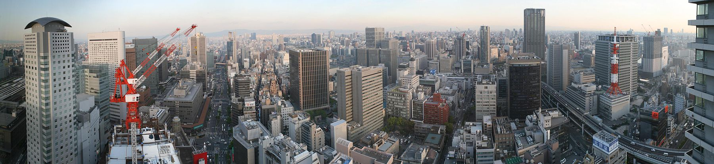

Osaka, el contrapunto a Tokio
Osaka (大阪市 Ōsaka-shi?, lit. Colina grande) es la tercera ciudad más grande de Japón, después de Tokio y Yokohama.Se encuentra ubicada en la isla principal del archipiélago, Honshū (本州, Honshū), en la desembocadura del río Yodo en la bahía de Osaka. La ciudad es uno de los puertos y centros industriales más importantes de Japón, así como la capital de la prefectura de Osaka (大阪府, Ōsaka-fu). Forma parte de la región de Kansai y es el núcleo del área metropolitana Osaka-Kōbe-Kioto (Keihanshin), que tiene una población de 18 644 000 habitantes.
Osaka (大阪市 Ōsaka-shi?, lit. Colina grande) es la tercera ciudad más grande de Japón, después de Tokio y Yokohama.Se encuentra ubicada en la isla principal del archipiélago, Honshū (本州, Honshū), en la desembocadura del río Yodo en la bahía de Osaka. La ciudad es uno de los puertos y centros industriales más importantes de Japón, así como la capital de la prefectura de Osaka (大阪府, Ōsaka-fu). Forma parte de la región de Kansai y es el núcleo del área metropolitana Osaka-Kōbe-Kioto (Keihanshin), que tiene una población de 18 644 000 habitantes.
Alguno de los barrios más interesantes de Osaka son:
- Umeda
- Shinsaibashi
- Morinomiya
- Namba
- Tennoji
- Amemura

-
Si vas a Osaka no te olvides de comerciales us dos platos más especiales!
- Takoyaki
- Okonomiyaki